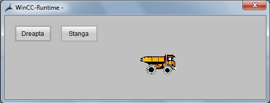
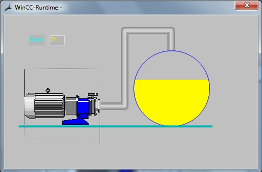
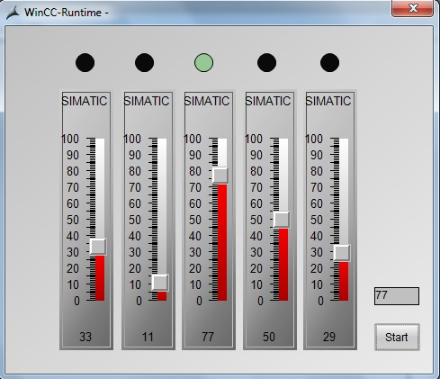
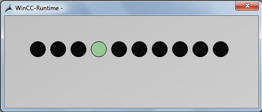

Afisati repetitiv Timer-ul si un numar aleator in doua controale de tip "Static-Text"
Plasati un simbol si doua butoane cu textele :"Dreapta" respectiv "Stanga". Deplasati simbolul cu 30 pixeli dreapta la fiecare click
pe butonul "Dreapta" si cu 30 pixeli stanga la fiecare click pe butonul "Stanga"

Plasati un simbol Siemens/HMI Symbols Library/Vehicles/Dump truck. Deplasati simbolul cu 30 pixeli la fiecare click pe simbol si aduceti-l in
pozitia initiala la fiecare double click. Se va afisa pozitia curenta intr-un Standard Objects -- Static Text
Simulati umplerea unui rezervor de la o pompa. Se va afisa valoarea nivelului intr-un Standard Objects -- Static Text

Simulati umplerea unui rezervor de la o pompa. Se va colora cu rosu daca nivelul este peste 70% si va afisa valoarea nivelului intr-un Standard Objects -- Static Text
Plasati un simbol Siemens/HMI Symbols Library/Vehicles/Dump truck. Deplasati simbolul cu 30 pixeli la fiecare 250 ms. Aduceti simbolul in
pozitia initiala daca ajunge la 600 pixeli. Se va afisa pozitia curenta intr-un Standard Objects -- Static Text
Plasati 2 simboluri Siemens/HMI Symbols Library/Vehicles/Dump truck. Simulati o deplasare continua a simbolurilor
Se plaseaza 5 Slider-uri si 5 Led-uri. Aprindeti la apasarea unui buton ledul corespunzator slider-ului cu valoarea cea mai mare.

Simulati functionarea unui led care dupa pornire isi schimba culoarea iar dupa 2 s schimba din nou culoarea

Simulati un joc de lumini pe 10 led-uri (se simuleaza deplasarea unui led st-dr intr-o bucla nesfarsita)